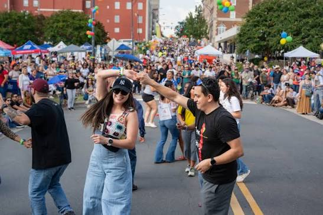

Event Overview
The International Village Food & Music Festival is a free community celebration featuring international music, cultural performances, food, crafts, and local organizations. The event gives visitors an opportunity to experience the diversity of Winston-Salem's international community in a welcoming downtown setting.
Featured Activities
- Watch live musical performances
- Enjoy cultural performances
- Try international food
- Explore the international marketplace
- Visit community organization booths
Attendee Tips
- Arrive early to give yourself time to find parking.
- Wear comfortable clothing and shoes for walking around the festival.
- Bring water, especially if the weather is warm.
- Bring a method of payment for food, crafts, and vendor purchases.
- Check the weather forecast before leaving home.
Attendee Testimonial
The festival is a great way to experience different cultures without leaving Winston-Salem. The community atmosphere makes the event especially enjoyable.
Event Information
Date: Saturday, September 12, 2026
Time: 12:00 p.m. - 5:00 p.m.
Location: Winston Square Park, 310 N. Marshall Street, Winston-Salem, NC
Admission: Free